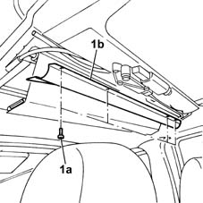
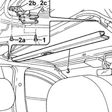
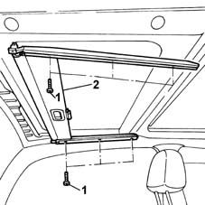

7030B26 sliding roof blind - r+r with roof panel removed
- Path
- Procedures > 70 FITTINGS > 7030 SUN ROOF AND HOOD > 7030B sliding roof > 7030B26 sliding roof blind - r+r with roof panel removed
- Kind
- repair procedure (removal / refitting; the operation number is the code)
- Applies to
- all engines; all production periods
- Interactive page
- https://sloeber94.github.io/elrnDB-lYpsln/en/#/2429555
Applies to: all engines; all production periods
 Removing
Removing
 Refitting
RefittingTo remove the front blind, proceed as described below:
Completely close the blind.
1. Undo the fixing bolts (1a) and remove the sun roof front blind shield (1b).

Applies to: all engines; all production periods
1. Undo the bolts fixing the sun roof cable guide bracket.
2. Undo the fixing bolts (2a) and remove the mounting brackets (2b) and (2c).
3. Release the ends of travel and remove the sun roof front blind.

Applies to: all engines; all production periods
Proceed as described below to remove the sun roof rear blind:
Completely close the blind.
1. Undo the bolts fixing the blind to the frame.
2. Remove the blind complete with guides.

Applies to: all engines; all production periods
Refitting
RemovingTo fit the front blind:
Place the blind in position.
Tighten the bolts fixing the blind mounting bracket on both sides.
Tighten the bolts fixing the sun roof cables guide side brackets.
Position the blind shield and tighten the fixing bolts.
Check the operation carrying out several blind opening and closing cycles.
To fit the rear blind:
Place the blind complete with guides in position.
Tighten the bolts fixing the blind to the sun roof frame.
Check the operation carrying out several blind opening and closing cycles.